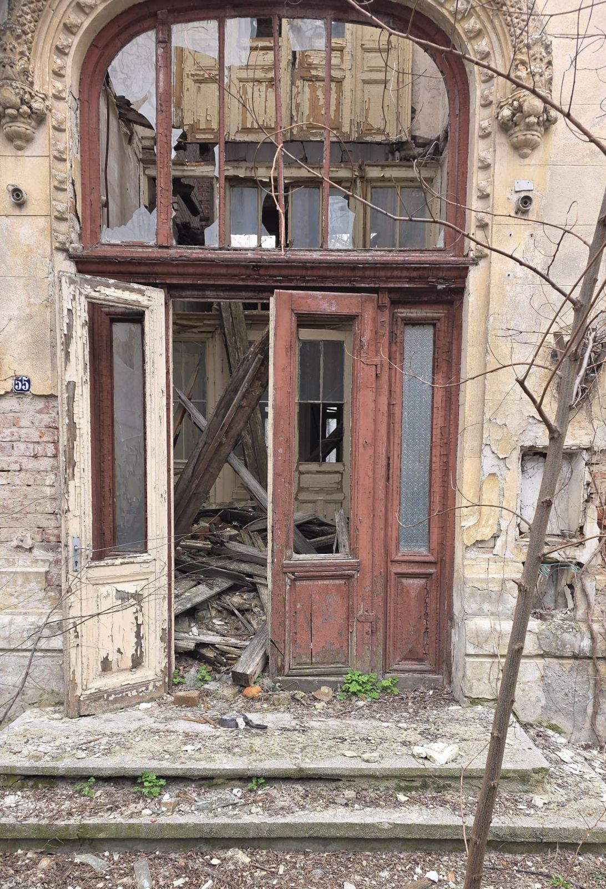
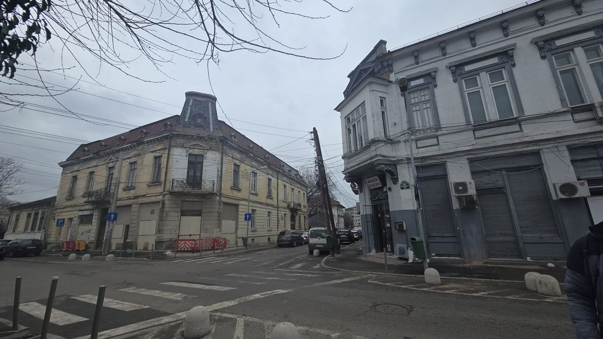
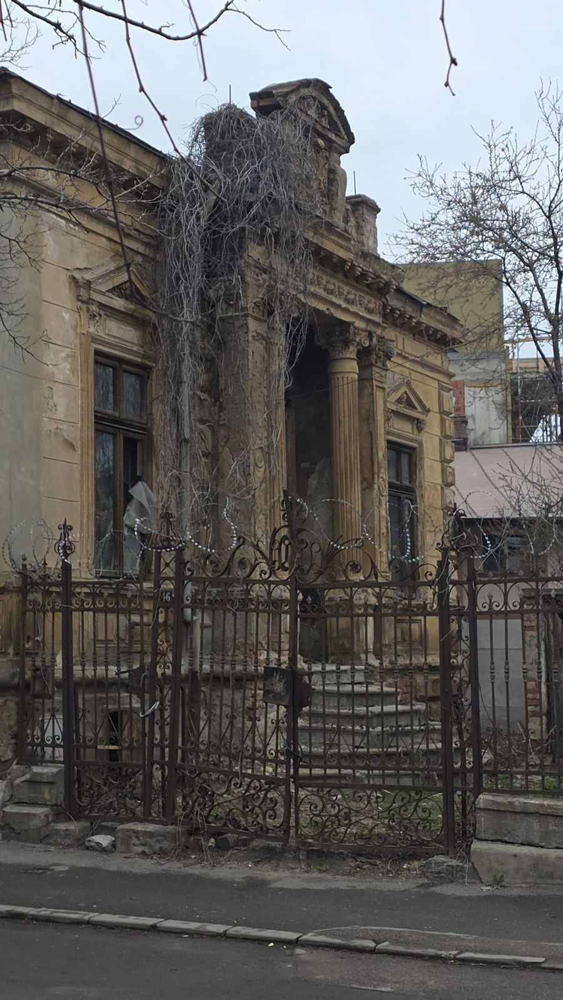
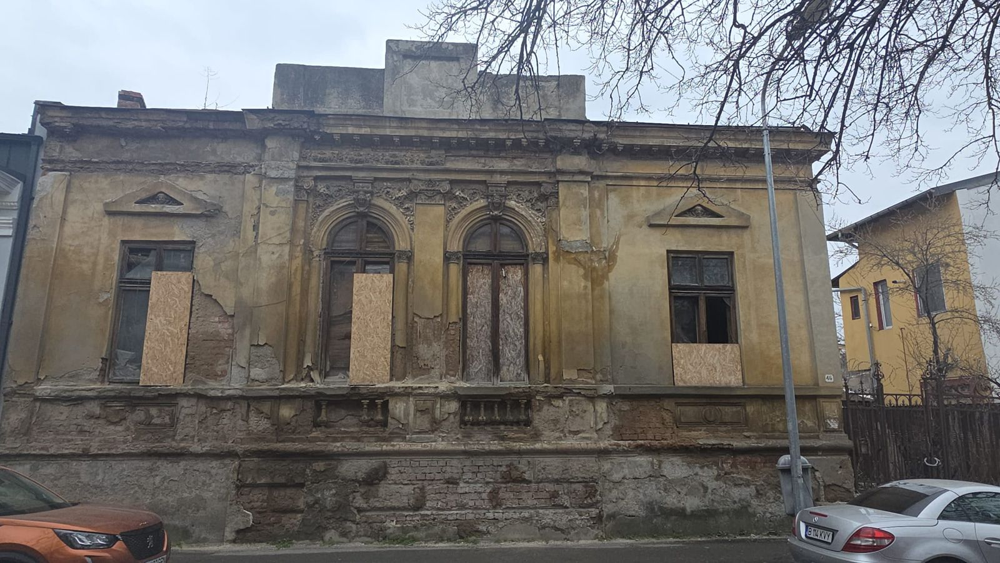
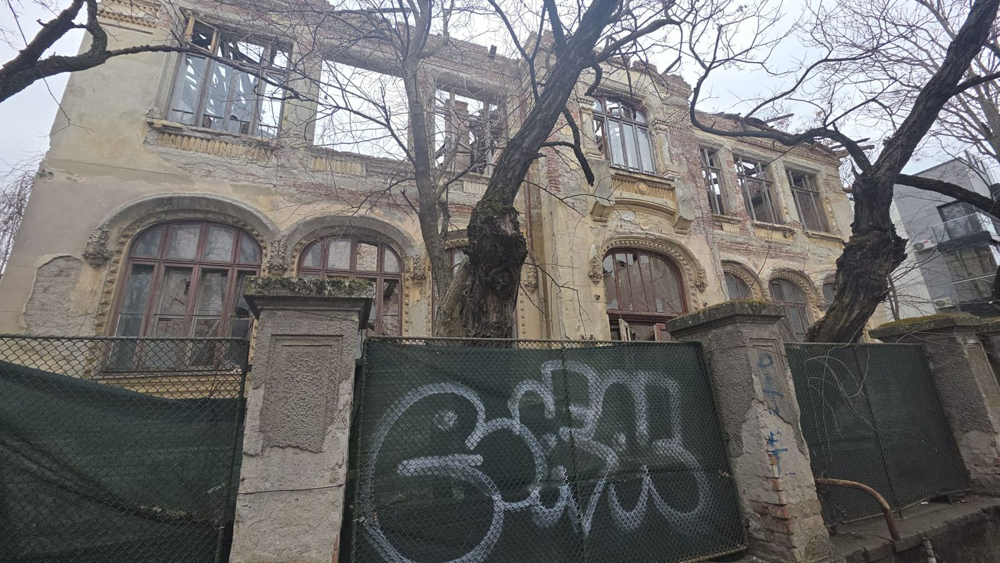
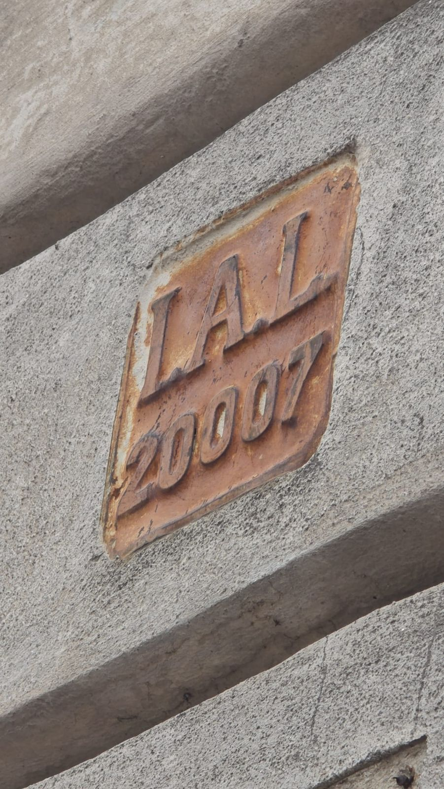
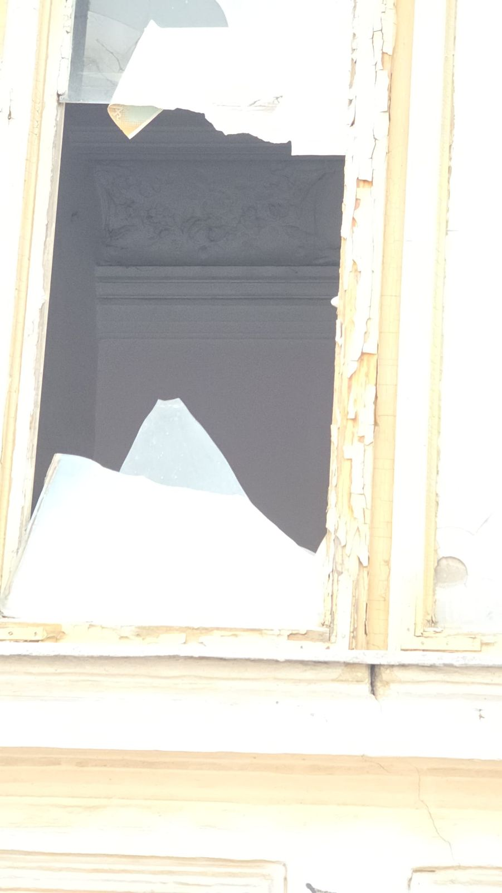

Journey 03 · București Note 3 of 5 Chronicles of
Bucharest’s Empty Houses
Empty houses in the city once called Paris of the East.
Once beautiful structures sit, seemingly abandoned, throughout the city. Some look as if they were destroyed in a natural disaster, others like derelict monuments lost to time. These ghost houses are scattered across neighborhoods, near tourist spots, and along critical intersections, peppered throughout the city.

Walking through Bucharest, I couldn’t help but wonder why such valuable and historic property was left in such a state and why it seems to be so common to see.
It turns out history offers some explanation for what these buildings represent.
From the late 1800s to the early 1900s in Bucharest, most urban houses were mixed use. Shops were on the ground floors, with workers and owners living above. Owners were largely middle class or small business owners.
The architecture ranged wildly, reflecting not just Romanian history, but Italian, French, and Austro-Hungarian influence.
A single block could include homes with Greek columns on the balcony, others with the decorative flair and bright colors of Austrian row houses, and still others that feel lifted from Paris and placed along the street. At one point, Bucharest was known as “Little Paris,” with Belle Époque buildings, grand boulevards, and expansive parks. Walking the city, you can still see why.

However, by the 1950s, Romania had become a Communist Soviet satellite state, and one of the most immediate ways that shift is visible today is in the built environment of the city. Vast blocks of apartments were built, still referred to as “communist blocks”, designed around function and efficiency rather than aesthetics. But even more telling of this time in history are the empty houses of Bucharest.
The communist system implemented the nationalization of factories, shops, land – and yes, even houses. Owners of large urban homes were forced to move into a small section of their house or they were removed entirely and placed into one of the newly build communist blocks. During the tour, several people asked, “What if they said no? The government can’t just take your house.” It struck me that while I was the only American, I wasn’t the only one removed from the reality of that kind of system.

Homes in Bucharest and beyond were redistributed, with multiple families living in each house, sharing the facilities and paying rent to the state. And while this certainly provided economic benefits to the government, seizing the housing did more than just add to the national coffers. Middle class independence was destroyed, social relationships were reorganized, and there was a forced dependence on the state. By controlling the infrastructure, the government was actually controlling people.
The public justification was framed positively: many poor families from outside the city were relocated to the urban areas, given housing and “good” factory jobs. The rapid restructuring centralized control and “solved” a housing crisis following the war. Romania was a poster of what it meant to be a resilient country.

But a system can appear resilient while producing brittle humans, which is what happened in this case: people were displaced, lost their autonomy, placed under constant surveillance, forced into cohabitation, and experienced psychological destabilization. An entire culture underwent a transformation regarding trust, privacy, identity, and family structure.
But what happened to the houses?

After the fall of communism, there was a big political push to return homes taken by the state to their original owners or their families. On paper: a fantastic plan. In reality: a nightmare of paperwork, laws and bureaucracy.
First, what about the tenants living in these homes? They did not take the homes, they were placed there, maybe decades earlier. So what about their needs? A law in the 1990s was passed that provided tenants the ability to buy the places they were living in – but only if the owners agreed to sell. Many did not want to sell. Some places were unsellable, damaged from time and earthquakes. Other houses were stuck in a web of historical preservation laws making renovation expensive and challenging.

So, many buildings entered a kind of suspended state. Not truly owned, not able to be transferred, tied up in claims, counter claims, inheritance disputes… and not by the dozens. Or even the hundreds…. but by the thousands. (Pictured is a plaque on one of these houses, indicating it is seized home #20,007)
Estimates are that more than 400,000 buildings and properties were seized by the communist regime, and today these cases linger in court systems both within Romania and the European Court of Human Rights.
But some of these buildings you can see inside of from the street if you look carefully. Peer through a broken window or an ajar door… and inside you can see past the deteriorating outer walls and into the interiors that still hold traces of what they once were. Ornate crown moldings, large fireplaces, still beautiful despite the dulled wallpaper.
And I think that is part of the story too.

Originally published at fieldnotesfromabroad.com/2026/04/05/field-notes-bucharests-empty-houses/